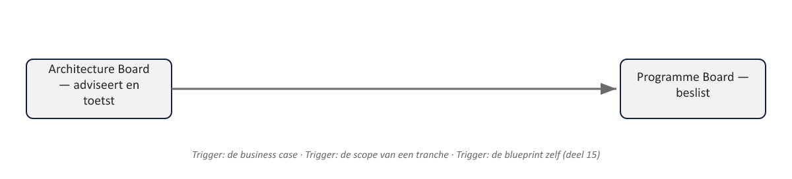

Sheet 1Titel
Project- en Programmamanagement
Niveau 2 · Deel 14: Programmaorganisatie en governance
Sheet 2Organization: het theme
Wie mag welk besluit nemen?
Programmatische tegenhanger van PRINCE2’s Organizing
Sheet 3Drie lagen
| Laag | Gedelegeerd gezag | Samenstelling |
|---|---|---|
| Sponsoring group | Om het programma te richten | Senior leiders die zelf verantwoording afleggen aan de bestuurders van de investerende organisatie(s) |
| Programme Board | Om de levering van baten aan te sturen, binnen de grenzen van de sponsoring group | Senior Responsible Owner (SRO) · Programme Manager · Business Change Manager(s) (BCM) |
| Programme Office | Beheersing van levering en capaciteit | Geleid door de programme office lead |
Sheet 4Sponsoring group
Gedelegeerd gezag om te richten
Senior leiders, verantwoording aan de investerende organisatie(s)
Sheet 5Programme Board
Gedelegeerd gezag om levering aan te sturen
Minimaal: SRO · Programme Manager · Business Change Manager(s)
Sheet 6Programme Office
Beheersing van levering en capaciteit
Vergelijkbaar met Project Support, op programmaschaal
Sheet 7SRO vs. Executive
| Executive | SRO | |
|---|---|---|
| Scope | Eén project | Een programma: meerdere projecten, elk met een eigen Executive |
| Tijdshorizon | De doorlooptijd van het project (doorgaans maanden) | De doorlooptijd van het programma (jaren) |
| Focus | De business case van het eigen project | Samenhang tussen projecten, voortgang van baten, en of het programma nog desirable, viable en achievable is (deel 13) |
| Bemoeienis met projectdetails | Stuurt rechtstreeks op het eigen project | Bemoeit zich niet met wat een projectmanager op projectniveau al hoort te beslissen |
Stuurt op samenhang en baten, niet op projectdetails
Sheet 8Programma- en projectgovernance verbonden
Elk project behoudt eigen PRINCE2-rollen
Rapporteert nu aan de Programme Board, niet direct aan de sponsoring group
Sheet 9Waarom dit ertoe doet
Voorkomt: vijf goed bestuurde projecten, niemand bewaakt het geheel
Precies de reden waarom een programma bestaat (deel 11)
Sheet 10Koppeling: de Architecture Board
Programme Board: is dit het waard, levert het wat het moet?
Architecture Board: is de oplossing solide en samenhangend?
Sheet 11Escalatierichting
Architectuurbeslissingen die scope/business case raken → naar de Programme Board
Nooit andersom

Sheet 12Twee faalpatronen om te vermijden
Architecture Board neemt programmasturing over
Programme Board negeert architectuuradvies tot het duur wordt
Sheet 13Toegepast: Programma Mutatieplatform
Sponsoring group: directie + CFO + hoofd Klantcontact
Programme Board: SRO + programmamanager + 2 BCM’s
Architecture Board: adviseert over de gedeelde kernsysteemkoppeling
Sheet 14Vooruitblik
Deel 15 (2 dagdelen): Design en Structure — blueprint en tranches